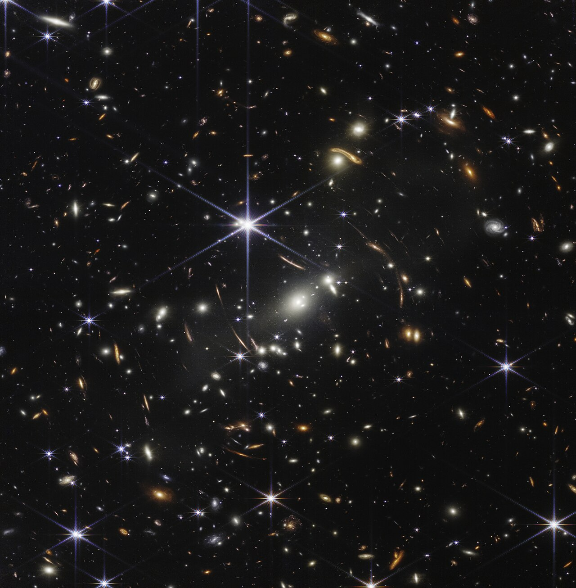
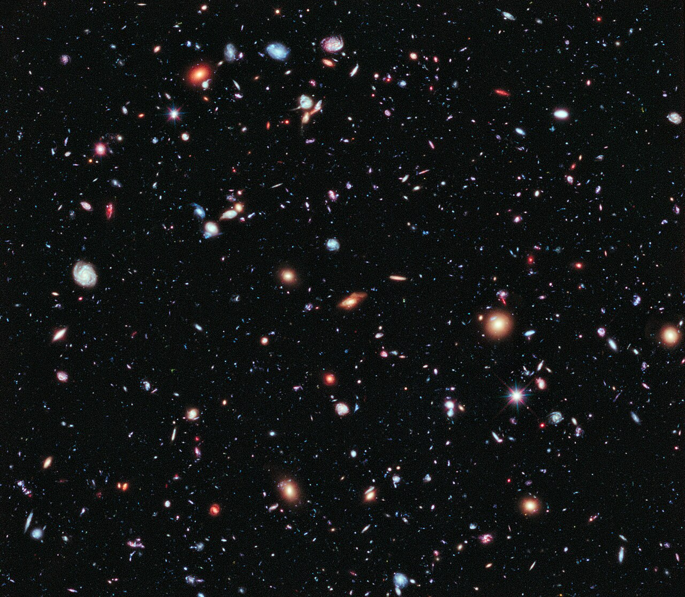
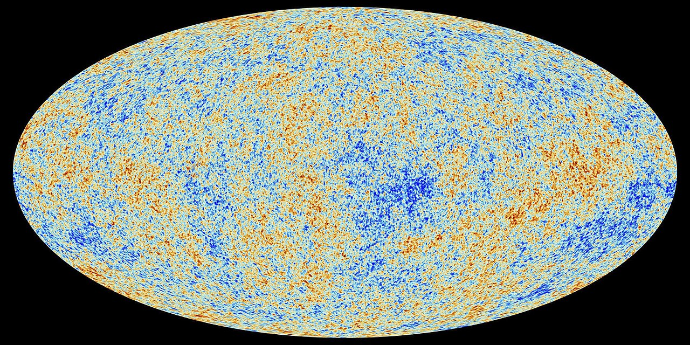

Рождение и жизнь Вселенной
Научно-популярная лекция для горожан
1 час

Глава 1. Сюжет лекции
Главная мысль
Вселенная не родилась готовой сценой с готовыми объектами.
\[ \text{история Вселенной} = \text{расширение} + \text{охлаждение} + \text{рост структуры}. \]
Все в лекции будет разверткой этой строки.
Три вопроса
- Что физики называют началом Вселенной?
- Почему сначала появились частицы, потом ядра, потом атомы, потом звезды?
- Как проверять историю, которая началась задолго до людей?
Мы не смотрим на Вселенную снаружи. Мы читаем следы, оставленные внутри нее.
Часовой маршрут
- 8 минут: что такое Большой взрыв и почему это не обычный взрыв.
- 12 минут: горячая плазма, частицы, антиматерия и нейтрино.
- 12 минут: первые ядра, первый свет и реликтовое излучение.
- 15 минут: темные века, звезды, галактики, Солнце и Земля.
- 10 минут: темная энергия, будущее и открытые вопросы.
- 3 минуты: как все это проверяется.
Что честно отделяем
- Надежно измерено: расширение, реликтовое излучение, первые легкие элементы, рост структуры.
- Рабочая идея: очень ранняя инфляция как объяснение больших масштабов.
- Открыто: квантовое самое начало, темная материя, темная энергия, избыток материи.
Наука сильна не тем, что знает все, а тем, что умеет отделять знание от гипотез.

Глава 2. Большой взрыв
Не взрыв в пустоте
Большой взрыв - это не шар огня, летящий в пустое пространство.
- Нет центральной точки, откуда все разлетелось.
- Расширяется сама геометрия расстояний.
- Любой далекий наблюдатель видит похожую картину.

Что значит горячее
В прошлом Вселенная была плотнее и горячее.
- Свет имел более короткие волны.
- Частицы чаще сталкивались.
- По мере охлаждения менялся состав того, что могло существовать устойчиво.
Формула-ориентир:
\[ T \propto \frac{1}{a(t)}. \]
Почему это не фантазия
У ранней Вселенной есть последствия, которые можно измерять сегодня.
- Красное смещение говорит о расширении.
- Реликтовое излучение говорит о горячей плазме.
- Доля водорода и гелия говорит о первых минутах.
- Галактики показывают рост структуры.
Инфляционная идея
Очень раннее ускоренное расширение могло растянуть микроскопические флуктуации до космических размеров.
- Это объясняет, почему небо почти одинаково во всех направлениях.
- Это дает семена будущих галактик.
- Детали конкретной инфляционной модели все еще обсуждаются.
Глава 3. Первые частицы
Без привычных объектов
В первые эпохи нет атомов, планет и даже устойчивых ядер.
- Есть плотная смесь частиц и излучения.
- Частицы рождаются и исчезают в столкновениях.
- Слово “вещество” здесь еще не похоже на наш повседневный опыт.
Материя победила антиматерию
Сегодня вокруг нас почти нет антивещества.
- В ранней Вселенной частицы и античастицы рождались парами.
- Почти все они аннигилировали обратно в свет.
- Малый избыток материи стал атомами, звездами и нами.
Почему этот избыток появился - один из больших открытых вопросов.
Нейтрино уходят
Когда Вселенная остыла, нейтрино перестали часто сталкиваться с плазмой.
- С этого момента они почти свободно летят через космос.
- Реликтовые нейтрино должны существовать.
- Напрямую поймать их крайне трудно: они слишком слабо взаимодействуют.
Ранняя Вселенная как лаборатория
Чем выше температура, тем выше типичная энергия столкновений.
- Космос проверял физику, которую трудно повторить в земной лаборатории.
- Лаборатория проверяет правила, по которым мы читаем космические следы.
- Поэтому космология и физика частиц постоянно разговаривают друг с другом.
Глава 4. Первые ядра
Что успело собраться
Первые устойчивые легкие ядра возникли, когда Вселенная стала достаточно холодной.
- Водород - главный строительный материал.
- Гелий-4 - около четверти обычного вещества по массе.
- Дейтерий и литий - малые, но важные следы ранней физики.
Почему не железо
Ранняя Вселенная не успела сделать тяжелые элементы.
- Она быстро расширялась и остывала.
- Плотность падала слишком быстро.
- Для углерода, кислорода и железа понадобились звезды.
Первые минуты дали простую химию. Сложную химию доделали звезды.
Почему это проверяемо
Доля легких элементов - не украшение рассказа, а измеряемый след.
- Слишком много нейтронов - изменится доля гелия.
- Слишком быстрый или медленный темп расширения - изменится состав.
- Дейтерий особенно чувствителен к плотности обычного вещества.
Глава 5. Первый свет
До прозрачности
Пока свободных электронов много, свет не проходит далеко.
- Фотон постоянно рассеивается.
- Вселенная похожа на светящийся туман.
- Увидеть более ранний свет напрямую нельзя обычными телескопами.
Атомы и свободный свет
Когда электроны соединяются с ядрами, возникают нейтральные атомы.
- Свету становится почти не на чем рассеиваться.
- Он уходит в свободный полет.
- Сегодня мы видим этот свет как реликтовое излучение.
\[ p + e^- \rightarrow \mathrm{H} + \gamma. \]
Реликтовое излучение
Это фотография Вселенной в возрасте примерно 380 тысяч лет.
- Тогда температура была несколько тысяч кельвинов.
- Сейчас из-за расширения это всего около 2.7 K.
- Пятна на карте - очень малые отклонения температуры.

Не идеально гладкое
Если бы все было идеально одинаковым, галактикам было бы не из чего вырасти.
- Малые флуктуации плотности усиливались гравитацией.
- Неровности в реликтовом излучении - ранние семена структуры.
- Масштаб эффекта мал: примерно одна стотысячная.
\[ \frac{\Delta T}{T} \sim 10^{-5}. \]
Глава 6. Темные века и первые звезды
Темные века
После реликтового излучения атомы уже есть, но звезд еще нет.
- Видимого света почти некому производить.
- Газ медленно собирается гравитацией.
- Нужны первые плотные облака, чтобы зажглись звезды.
Темная материя
Темная материя не рассеивает свет, но дает гравитационные ямы.
- Обычный газ падает в эти ямы.
- Там он охлаждается и сжимается.
- Так невидимое помогает видимому стать структурированным.
Мы видим роль темной материи по гравитации, но не знаем, из каких частиц она состоит.
Первые звезды
Первые звезды были почти без тяжелых элементов.
- Многие из них, вероятно, были массивными и короткоживущими.
- Их взрывы впервые обогатили космос тяжелыми ядрами.
- С этого момента появляется материал для планет.
Звезды как фабрики
Звезда - это не просто лампа в небе.
- Внутри звезд идут ядерные реакции.
- Взрывы и ветры возвращают вещество в межзвездную среду.
- Новые поколения звезд и планет рождаются уже из обогащенного газа.
Глава 7. Галактики
Космическая паутина
На больших масштабах вещество распределено не случайной кашей.
- Есть нити.
- Есть узлы - скопления и сверхскопления.
- Есть пустоты.
Это взрослая версия тех самых малых неровностей ранней Вселенной.
Галактики растут
Галактики не появляются сразу готовыми.
- Малые сгустки сливаются в более крупные.
- Газ охлаждается, вращается и образует диски.
- Черные дыры в центрах галактик растут вместе с окружением.
Типы галактик
Галактики бывают разными не из-за вкуса художника, а из-за истории роста.
- Диск и спиральные рукава говорят о вращении и газе.
- Эллиптические галактики часто связаны со слияниями.
- Неправильные формы особенно обычны в молодой Вселенной.
Млечный Путь
Наша Галактика - поздняя, долго собиравшаяся глава.
- Несколько поколений звезд обогатили газ тяжелыми элементами.
- Из такого газа позже возникли Солнце и планеты.
- Земная химия - результат длинной космической переработки вещества.
Глава 8. Солнце, Земля, жизнь
Солнечная система
Около 4.6 млрд лет назад сжалось облако газа и пыли.
- В центре зажглось Солнце.
- Остатки диска стали планетами, астероидами и кометами.
- Внутри этого диска уже были тяжелые элементы от старых звезд.
Земля как лаборатория
Земля важна не потому, что она центр Вселенной.
- Она собрала тяжелые элементы, воду, атмосферу и геологию.
- На ней возникла сложная химия.
- Жизнь стала частью космической истории вещества.
Мы сделаны из вещества, которое Вселенная не умела делать в первые минуты.
Наблюдатель появляется поздно
Большая часть истории Вселенной прошла без планет, биологии и наблюдателей.
- Но физические следы ранних эпох сохранились.
- Свет, химический состав и движение галактик доступны измерению.
- Поэтому поздний наблюдатель может восстановить раннюю историю.
Глава 9. Темная энергия и будущее
Расширение ускоряется
В конце XX века оказалось, что расширение Вселенной сейчас ускоряется.
- Далекие сверхновые оказались слабее, чем ожидалось для замедляющейся Вселенной.
- Реликтовое излучение и крупномасштабная структура поддерживают эту картину.
- В простейшем описании это темная энергия или космологическая постоянная.
Что это меняет
Темная энергия не разрывает Солнечную систему.
- Галактики, звезды и планеты на малых масштабах связаны гравитацией.
- На космологических масштабах расстояния между скоплениями растут быстрее.
- Очень далекое будущее становится холоднее и темнее.
Далекое будущее
В простейшем сценарии:
- звездообразование со временем почти прекратится;
- останутся долгоживущие слабые звезды, остатки звезд и черные дыры;
- будущим наблюдателям будет труднее увидеть далекую Вселенную.
Но чем дальше в будущее, тем сильнее ответ зависит от неизвестной физики.
Открытые вопросы
Остались вопросы, которые не являются мелкими поправками.
- Что было в самой ранней квантово-гравитационной эпохе?
- Почему материи чуть больше, чем антиматерии?
- Что такое темная материя?
- Что такое темная энергия?
- Единственна ли наша космическая история?
Глава 10. Как мы это знаем
Четыре главных следа
Космология убедительна, когда разные следы дают одну историю.
- Расширение: красные смещения галактик.
- Реликтовое излучение: фотография ранней плазмы.
- Первичный химический состав: след первых минут.
- Рост структуры: галактики, скопления, линзирование.
Одна история, разные приборы
Разные наблюдения проверяют разные эпохи.
- Телескопы видят свет и галактики.
- Спектры говорят о химическом составе.
- Карты реликтового излучения видят ранние флуктуации.
- Физика частиц задает правила микромира.
Самый честный финал
Мы не знаем Вселенную снаружи.
- Но внутри нее сохранились следы.
- Эти следы складываются в связанную биографию.
- Чем ближе к самому началу и чем дальше в будущее, тем честнее говорить об открытых вопросах.
История Вселенной - это не миф о начале, а проверяемая реконструкция по следам.
Глава 11. Источники визуалов
Credits
- Webb First Deep Field: NASA, ESA, CSA, STScI. Local copy from Wikimedia Commons: https://commons.wikimedia.org/wiki/File:Webb%27s_First_Deep_Field.jpg
- Webb Cosmic Cliffs: NASA, ESA, CSA, STScI. Local copy from Wikimedia Commons: https://commons.wikimedia.org/wiki/File:NASA%E2%80%99s_Webb_Reveals_Cosmic_Cliffs,_Glittering_Landscape_of_Star_Birth.jpg
- Hubble eXtreme Deep Field: NASA, ESA, G. Illingworth, D. Magee, P. Oesch, R. Bouwens, HUDF09 Team. Local copy from Wikimedia Commons: https://commons.wikimedia.org/wiki/File:The_Hubble_eXtreme_Deep_Field.jpg
- CMB map: ESA / Planck Collaboration. Local copy from Wikimedia Commons: https://commons.wikimedia.org/wiki/File:Cosmic_Microwave_Background_(CMB).jpeg
- Медиа из авторской Keynote-лекции
Космология_как_архив.key: аналогия расширения, ранняя плазма, темная материя, первые звезды, Illustris, рост и типы галактик. - All schematic animations in these slides are generated locally in
assets/universe-lecture.js.
{kind=link}
{kind=link}
{kind=link}
.jpeg){kind=link}